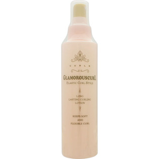

返回列表
产品名称：カールエックス グラマラスカール

中野製薬 カールエックス グラマラスカール １５０ｍｌ
メーカー 中野製薬
JANコード 4989793926673
商品の特徴
毛髪のダメージを補修しながらナチュラルでソフトな感触のカールを創ります。カーラーやアイロンを使用することでエレガントな巻き髪スタイルを長時間キープ。
成分・分量
水、BG、加水分解ケラチン（羊毛）、（ジヒドロキシメチルシリルプロポキシ）ヒドロキシプロピル加水分解コムギタンパク、ポリクオタニウム-51、尿素、ラウリル硫酸Na、ジメチコン、ラウレス-2、ラウレス-21、フェノキシエタノール、メチルパラベン、香料
用法及び用量
150ml